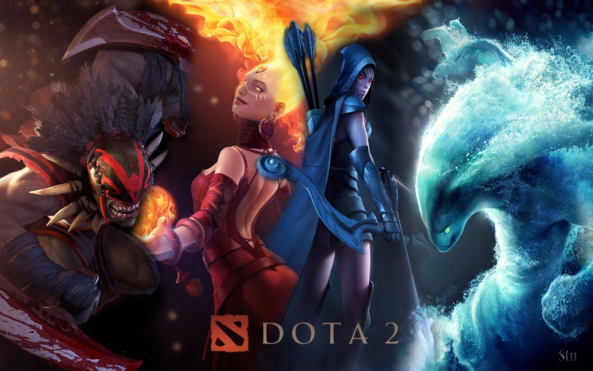

A Dota 2 egy ingyenesen játszható, többjátékos online csatamező (MOBA) videojáték, amelyet a Valve Corporation fejlesztett. A játék a Defense of the Ancients (DotA) nevű Warcraft III modifikáció alapján készült, és hivatalosan 2013. július 9-én jelent meg Microsoft Windows, OS X és Linux platformokon. Azóta a Dota 2 az egyik legnépszerűbb és legversenyképesebb e-sporttá vált világszerte.
A Dota 2 egy 5v5 csapatjáték, ahol a cél az ellenfél ősi épületének (Ancient) megsemmisítése. A játékosok különböző hősök közül választhatnak, mindegyikük egyedi képességekkel és szerepekkel rendelkezik. A hősök szerepei általában az alábbi kategóriákra oszthatók:
A játék térképe három fő sávra oszlik: felső (top), középső (mid) és alsó (bottom). A sávok között dzsungel található, ahol semleges lények farmolhatók. A sávokban található tornyok védik a bázist, és a játékosoknak át kell törniük ezeket a tornyokat, hogy elérjék az ellenfél bázisát.
A Dota 2 több mint 120 választható hőst kínál, mindegyik egyedi képességekkel és játékmenettel rendelkezik. A hősök képességei négy kategóriába sorolhatók:
A játékban szerzett aranyat a játékosok különböző tárgyak vásárlására használhatják. Ezek a tárgyak növelik a hősök hatékonyságát, különböző statisztikákat, képességeket és aktív hatásokat adva. A megfelelő tárgyak kiválasztása és időzítése kulcsfontosságú a győzelemhez.
A Dota 2 több játékmódot kínál:
A Dota 2 egyik legismertebb és legnépszerűbb e-sport címe, számos rangos versennyel és ligával. A legnagyobb esemény a The International, amely évente kerül megrendezésre, és a legnagyobb pénzdíjazású e-sport események közé tartozik. A Valve által szponzorált Major és Minor versenyek is jelentős szerepet játszanak a Dota 2 versenyközösségében.
A Dota 2 közössége aktív és elkötelezett, számos fórum, közösségi média csoport és Discord szerver szolgál helyszínül a játékosok közötti kommunikációra. A Valve folyamatosan frissíti a játékot új tartalmakkal, hősökkel, tárgyakkal és egyensúlyi változtatásokkal, hogy a játék mindig friss és izgalmas maradjon.
A Dota 2 a Source 2 motorra épül, amely kiváló grafikai megjelenítést és optimalizációt biztosít. A játék támogatja a különböző platformokat és operációs rendszereket, és rendszeres frissítéseket kap a teljesítmény javítása és a hibák kijavítása érdekében.
A Dota 2 egy komplex és mély stratégiát igénylő játék, amely rengeteg kihívást és izgalmat kínál mind az alkalmi játékosok, mind a versenyszellemű játékosok számára. Az egyedi hősök, változatos játékmódok, dinamikus gazdasági rendszer és az aktív közösség mind hozzájárulnak ahhoz, hogy a Dota 2 az egyik legkedveltebb és legelismertebb MOBA játék legyen a világon. A folyamatos fejlesztések és versenyek biztosítják, hogy a játék mindig friss és releváns maradjon, újabb és újabb játékosokat vonzva.
